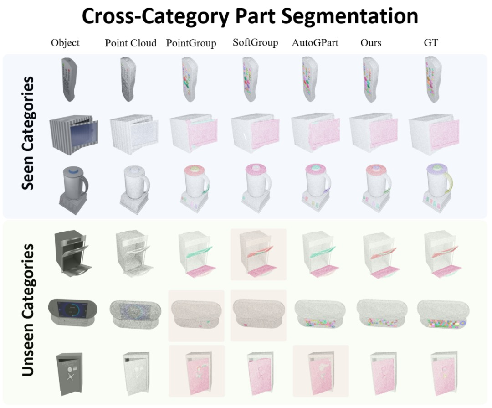
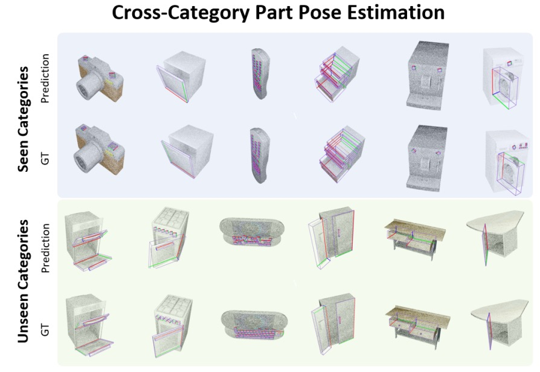
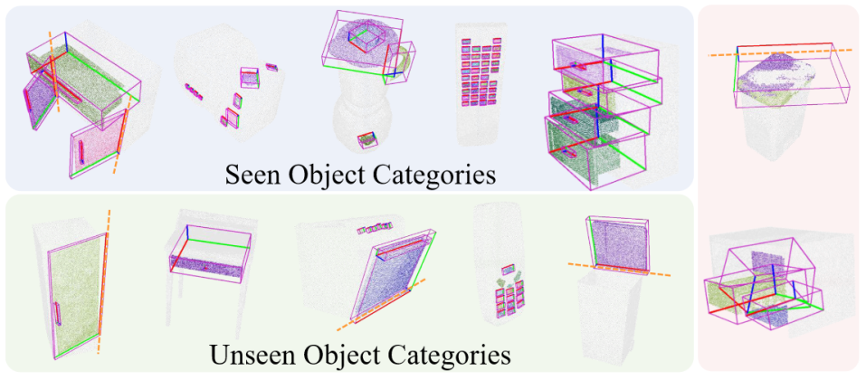
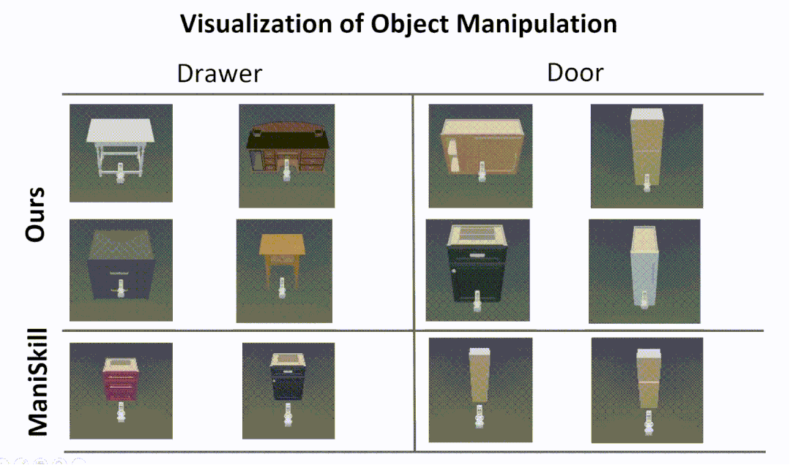
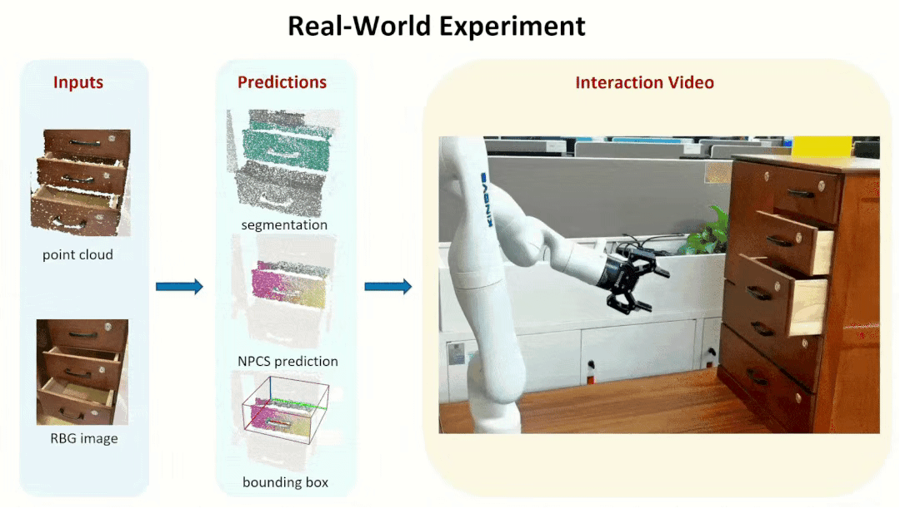

Results
Cross-Category Part Segmentation
We visualize the results of the different methods on the seen and unseen categories, where the red blocks show the failures. Our method has fewer failure cases. In particular, on the unseen category, our method still achieves the desired performance when the performance of other methods drops significantly.

Cross-Category Part Pose Estimation
We visualize the results of the part pose estimation. Our method has better results on seen and unseen categories with better generalization across categories.

The following shows the visualization results for these two tasks. The left two figures
show the results of cross-category part segmentation and pose estimation on seen and
unseen categories, while the right figure shows some of the failure cases. Here we
only show the revolute joint estimation results.

Cross-Category Part-based Object Manipulation
The following is a visualization of our part-based object manipulatio. Experiments in the simulator show that our approach enables more human-like interactions, while the RL algorithm from the ManiSkill benchmark often tries to open a door or drawer by prying and rubbing the edge of the door or drawer, rather than using the handle.

We further tested our method in real-world experiments, showing that our method is
robust to Domain Gap, which allows us to generate reliable part segmentation and
part pose estimation, and ultimately to successfully manipulate parts from unseen objects.
